Vinyl Match (Personal App)
A tool I designed for my own record buying. It takes the albums I listen to, from Spotify, Apple Music, Discogs or a list I type, and finds them on vinyl in 26 European record shops. It started as a Google Sheet with a sidebar and became a web app, where each album appears once with every shop side by side, and every shop gets its own basket with shipping to Greece.
Tasks
- Problem framing
- Data and matching rules
- Information architecture
- Interaction design
- UI design, dark and light themes
- Design tokens and accessibility
- Clickable prototype and pitch
- Microcopy and honest states
- Testing through real use
Personal tool · built for my own use
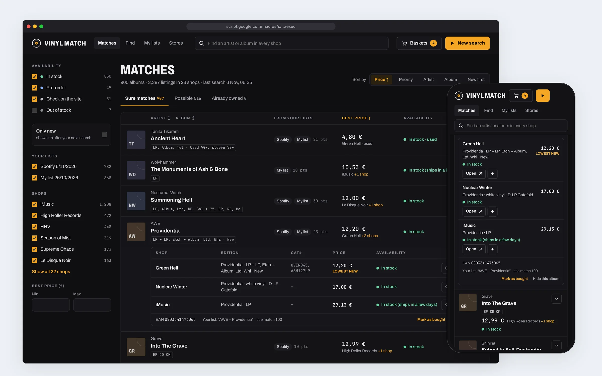
Overview
I listen to a lot of metal and goth, and I buy records from small European shops and labels. To check whether an album I like is out on vinyl, and where it is cheapest, I had to visit each shop and search it by hand, one album at a time. With thousands of albums in my library, that is not a search. It is a second job.
Vinyl Match does that job. My idea from the start was to download each shop’s catalogue once and compare it with my lists locally, instead of running thousands of searches. The first version was a script that wrote results into a Google Sheet. Using it every day showed me what was wrong with it, and the fixes turned it into a web app.
The design and every decision are mine: what to search, which shops, how a result should read, the baskets, the shipping and the review of every version on my own data. The code was written with Claude from my specifications.
A real, working tool for my own use. The screens below are the real web app, shown with the results of my real search of 6 November 2026.
shops in one search
Shop websites, label stores, ten Discogs sellers and one weekly email newsletter.
albums found on vinyl
From the 2,524 albums in my lists: 3,394 listings, compared across shops.
tabs to one list
One search used to write 27 sheet tabs. The web app shows one list, one row per album.
The problem
The question is simple: which of the albums I love can I buy on vinyl right now, where, and for how much? Answering it was not.
Thousands of albums
My Spotify playlists alone hold 14,671 tracks from 1,708 albums, plus my own list and a Discogs wantlist.
Dozens of shops
Each with its own site, search and spelling. “Other World” in one is “Otherworld” in the next.
CDs and shirts in the way
Shops sell CDs, tapes and merch next to the records. A match is only useful if it is vinyl.
Price is not the price
From Greece, shipping can cost as much as the record. The cheapest record is not always the cheapest order.
I want to bring my music in once and see, for every album, which shops have it on vinyl, at what price with shipping to Greece, and then order from as few shops as possible.
How might we…
- search thousands of albums in dozens of shops without searching each one?
- tell a real match from a similar title, and a record from a CD?
- be honest when a shop does not let us read a price or a stock level?
- compare offers by what I will actually pay, shipping included?
- make the result something I can read in a minute, on a laptop or a phone?
Designing for one user: me
As with my other personal tools, I wrote down my situation first, so every version could be judged against it and not against my mood that day.
My situation
- My music lives in Spotify playlists, an older Apple Music library and a list I keep by hand.
- I buy from European shops: German, French and Greek shops, metal and goth labels, and Discogs sellers.
- Everything ships to Greece, so shipping decides a lot.
- I already work in Google Sheets and Drive every day.
What I need from it
- Bring my lists in from where they already are, without retyping anything.
- Leave out the records I already own.
- See every shop for an album at once, cheapest first.
- Group what I pick into one order per shop, with the shipping in the total.
- No server and no monthly cost: it should run on my own Google account.
Download once, match locally
The first script I tried ran one search per album in each shop. It checked only the first 50 albums, one shop forbids automated searches, and it called a page a match because it contained the word “price”. My idea was the reverse: fetch every shop’s full vinyl list once, then do all the matching on my side.
1 · My lists
Spotify and Apple Music exports, Discogs wantlist and collection, Tidal through a converter, or Excel.
2 · Shop lists
Each shop’s whole vinyl catalogue, saved to my Drive. About 679,000 listings in 26 lists.
3 · Match
Names cleaned and compared: 90 or more is a match, 75 to 89 is “possible”. Only vinyl is kept.
4 · Check the matches
Only the matches get a live check of price, stock and catalogue number.
Every shop exposes its catalogue in its own way, so each kind of shop got its own reader, and adding a shop of a known kind became one line:
- Shopify and WooCommerce shops publish their products with real prices and stock. Most of the label stores I buy from are one of the two.
- Shops on other systems, like High Roller Records, HHV and iMusic, publish only a sitemap of product pages, so price and stock are read live, and only for matches.
- Ten Discogs sellers, read through the Discogs API. Using Discogs storefronts for shops without a readable website was my idea, and it added ten shops at once.
- One weekly newsletter. Osmose sends its list by email every week. Reading that email from my Gmail was also my idea: 402 lines, of which 201 are records with a price.
Not bypassed: bot protection
HHV’s product pages are behind bot protection. The tool does not get around it: HHV results say “Price and stock on the site” and link there.
Not bypassed: captchas
The Osmose website has a captcha, and Bandcamp-only labels block automated visits. These are left out, and the reasons are written down.
An honest unknown
When a price or a stock level cannot be read, the tool says so. A confident wrong answer would cost me a wasted order.
Stage one: a sheet and a sidebar
Google Sheets with Apps Script was my choice: it is free, it needs no server, and my data stays in my own account. The tool lived in a 300-pixel sidebar next to the sheet and wrote its results into tabs. Most of what it became came from my requests while I used it.
| What I asked for | What changed | Why it mattered |
|---|---|---|
| “It’s confusing: let me choose the shops, and choose whether to fetch new lists” | One flow and one button: your lists, which shops, then Search, with “Fetch new list” as a switch | Three separate steps had become three things to get wrong |
| Menus in English, and drop-downs that show which lists and shops are supported | A source menu grouped into “Records you want” and “Records you own”, each with a hint on where to get the file | You should not have to guess what the tool accepts |
| A log, to see what it actually does | A Log sheet: every request, every pause, every error, with the time and the shop | When a search took hours, the log showed why |
| My own result format: band, album, price, EAN and catalogue number, availability, link | One tab per shop and search, named “Shop date time”, in exactly that order of columns | The catalogue number tells you which pressing it is |
| “Is it cheaper somewhere else?” | A “Cheaper elsewhere” column next to the price: “Lower at VAN Records: 22,00 €” | The comparison I was doing by hand, in one cell |
| Pink rows for records that are out of stock, but only when that is certain | Rows turn pink only when the stock was checked live or the shop list is under a day old | An old list must not mark a record as gone |
| “As a UX/UI specialist for iOS, fix the dimensions and type, simple and elegant” | Inset grouped cards on an 8-point grid, 44-pixel targets, three weights, an iOS switch, a sticky action bar, reduced motion respected | A sidebar is small; every pixel had to earn its place |
| A Settings tab with checkboxes for the shops, not a drop-down | Shops in four groups, with All and None per group, saved as you tick | 26 shops do not fit in a drop-down |
| Find must be fast and must not touch my lists | Find searches only the saved shop lists, in ten parallel batches, with progress | Looking up one band should take seconds, not start a whole search |
A The result format I defined, one tab per shop and search

From the redesign study (route 2, “a better sidebar”). The sheet on the left follows my real result format, with example rows.
Real use broke it, usefully
Tests passed long before the tool was right. My own searches found what the tests could not, and each finding changed the design, not just the code.
“HHV shows CDs and tapes”
HHV’s list often does not say the format. Records whose name says vinyl stay; the rest move to a “Possible” tab with the reason written next to them.
“Why is search so slow?”
The log showed it: one Drive file per Discogs page, and 45 pauses between runs. Pages are now packed into a few large files, and runs follow each other with no pause.
A Find that never ended
Looking up one band read 759 files one by one. Find now reads them in ten parallel batches and tells you how far it has got.
“Tiring to search the tabs”
Every search wrote 22 shop tabs and 5 “Possible” tabs. The answer was there, but spread over 27 places. This one started stage two.
Real use also gave me the best features: reading the Osmose newsletter, using Discogs storefronts, the “Cheaper elsewhere” column and the pink rows all came from noticing what I did by hand while using the tool.
Stage two: the album is the unit
The sheet was organised the way the data arrived: by shop. But I never think “what does HHV have?”. I think “where can I get this album?”. So the redesign turned the structure around.
Before: by shop
- One tab per shop and search: 27 tabs after a single search.
- The same album could sit in five tabs, at five prices.
- Comparing meant opening tabs and remembering numbers.
- No room for shipping, baskets or a phone.
After: by album
- Each album appears once, with its best price and shop.
- Open it to see every shop side by side, cheapest new first.
- Sort by price, priority, artist or album; filter by stock, list and shop.
- A “+” on any offer puts it in that shop’s basket.
Before deciding how to build it, I asked for one or two screens for each possible route, so I could judge them by looking rather than by description:
Apps Script web app
A real app in the browser, with the sheet still underneath as the database. Free, no server. Chosen.
A better sidebar
Small steps, but still inside the sheet, still 300 pixels wide and still invisible in the Sheets phone app.
Separate front end
A phone-first app talking to the script. The most freedom, but hosting, sign-in and a second codebase.
No-code builder
Fast to set up, but every shop listing becomes its own row again: the same album three times.
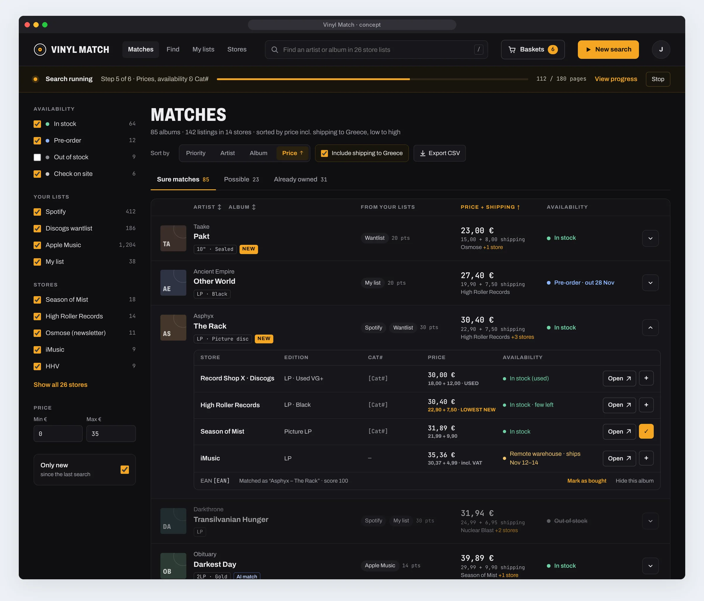
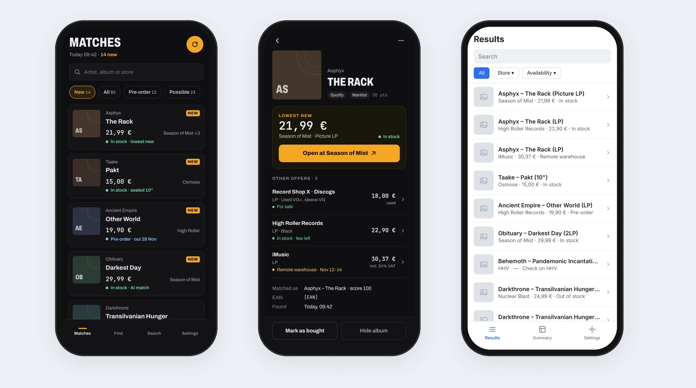
The look: a record shop at night. A near-black background, one amber accent like a warm label, condensed capitals for titles like the type on a record sleeve, and a monospaced font for prices and catalogue numbers so they line up and read like data. Album covers are placeholders with initials, because the tool does not download artwork.
Two requests while designing: I asked to list by name and by price, which became a sort control and sortable column headers, and the design study found that the sheet stored prices as text, so “100,00 €” sorted before “21,99 €”. Prices became real numbers in the sheet too.
One basket per shop, and a pitch
My idea, while looking at the concept: put a “+” next to every offer and build a basket for each shop, so I can group my orders and see each one’s records, prices, total and shipping.
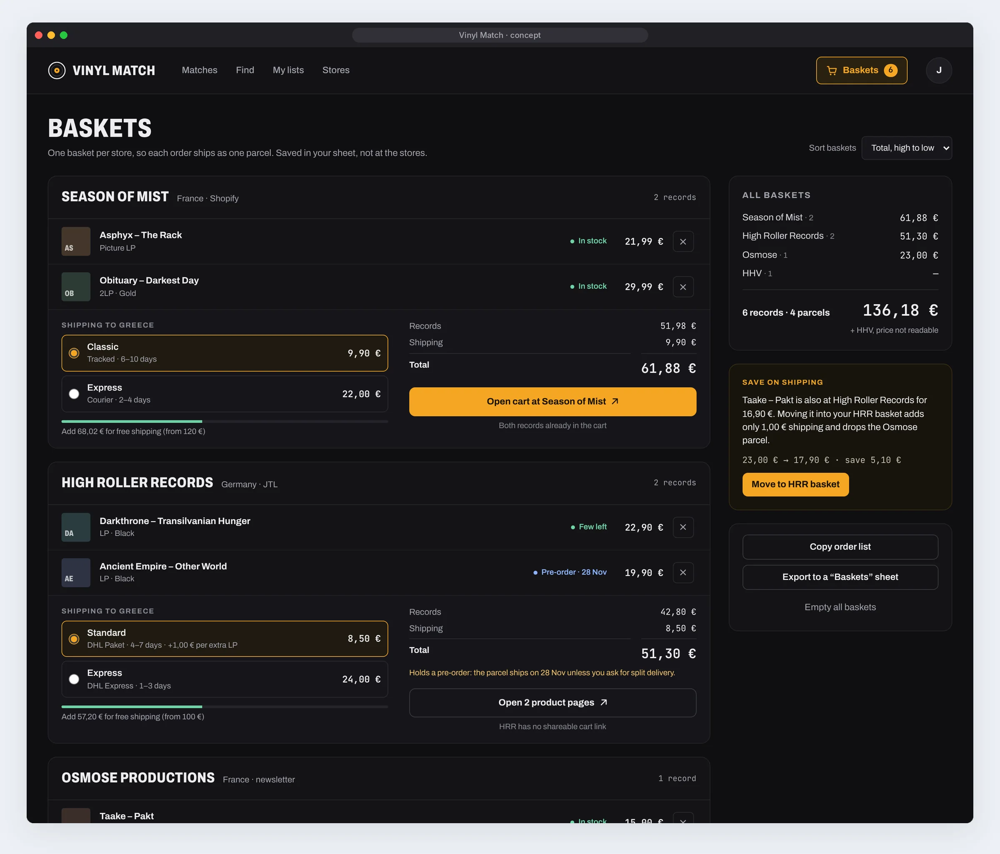
I wanted to show the idea to a friend, so the concept became a clickable prototype: a cover page and eight linked screens, then a simple PDF and a set of images I could send on a messaging app.
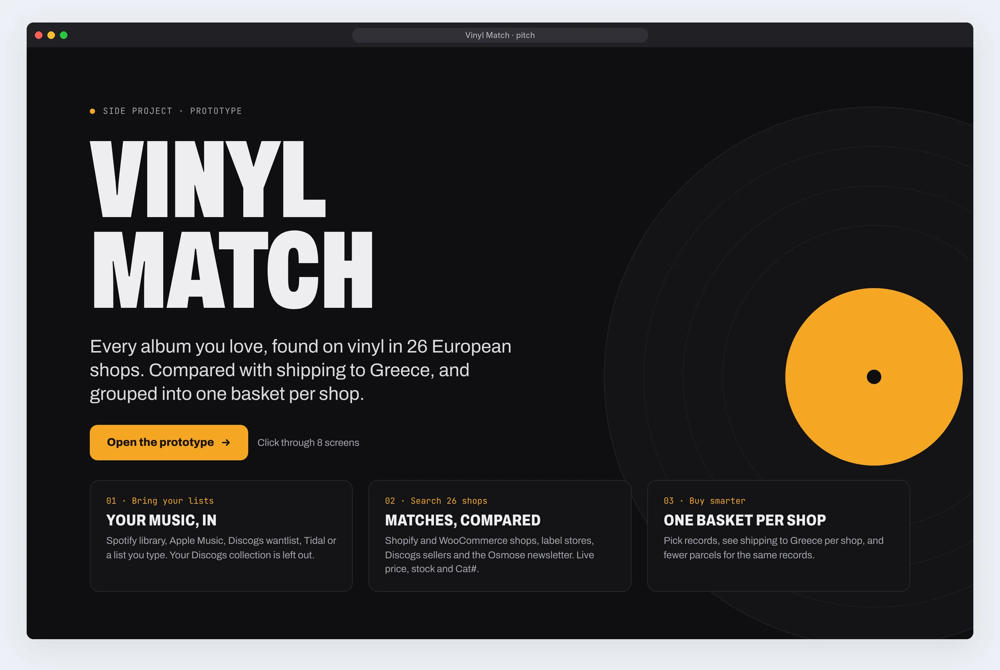
The basket is virtual, on purpose. Before building, I made sure of one thing: the basket only organises what I plan to buy. It never touches the shops’ own carts and never orders anything. “Open” takes me to the record’s page in the shop, and I buy it myself. That decision removed a feature from the concept, the pre-filled shop cart, because I did not need it.
The web app
Built in two phases: first the app on the data the search already produced, then shipping. Same design as the prototype, with my real data in it.
A Matches: every album once

- Sure matches, Possible, Already owned as three tabs. “Possible” always says why it is there: a similar title with its score, or a format the shop does not name.
- Lowest new first. Used copies from Discogs sellers are marked as used and never win “best price” over a new one silently.
- Fifteen albums per page, with numbered pages. I asked for pages instead of an endless list, so I always know where I am.
- “AI match” tags the similar titles that the AI check confirmed, so I know which ones a person has not seen.
B Baskets: what I will actually pay
![Baskets screen with three baskets: Season of Mist with two records and three shipping options to Greece, read from the shop’s checkout, La Poste Colissimo selected at 16,42 euros for a total of 61,40 euros; Nuclear Blast with one record and Spring shipping at 19,99 euros; Young and Cold with one record and EU shipping at 10,50 euros plus 2,50 per extra record. On the right, all baskets total 123,38 euros for 4 records in 3 parcels, including 46,91 euros of shipping, and a tip: Save 10,99 euros by moving Necrophobic Bloodhymns to Season of Mist](images/vinylmatch/web-baskets.webp)
- Each shop’s basket has its shipping options to Greece, priced for the number of records in it, and a total.
- The side panel adds up every basket: records, parcels and how much of the total is shipping.
- Save on shipping: when a basket has a single record that another basket’s shop also sells, the app works out whether moving it is cheaper. Here, moving one record saves 10,99 € and a whole parcel.
- A pre-order in a basket gets a warning, because it can hold back the whole parcel.
C Find: any band, in every shop
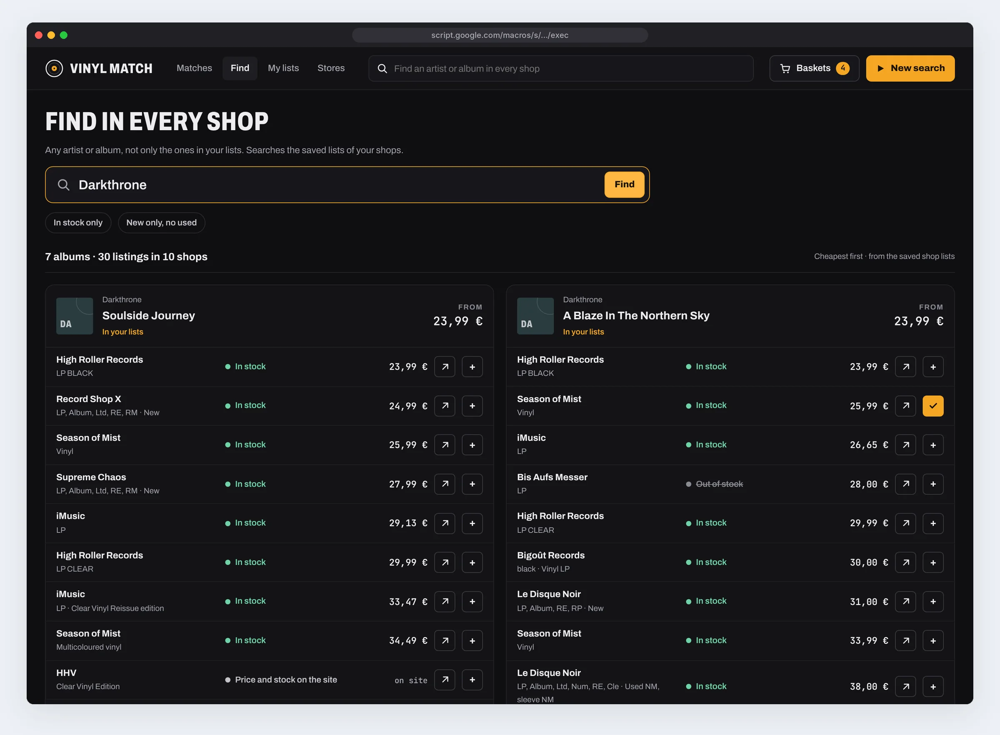
Find is not limited to my lists. It searches every saved shop list, groups the results by album, cheapest first, and tells me whether the album is already in my lists. It is also in the header, so it is one keystroke away from any screen.
D New search and My lists
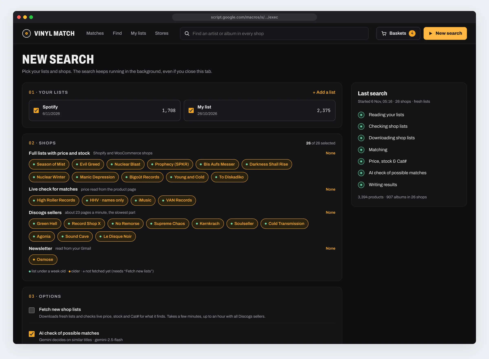
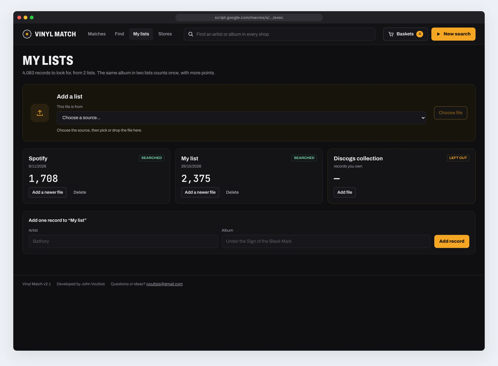
- The shops are grouped by what you get from them, and each shows how fresh its list is: green under a week, amber older, grey never fetched.
- A search keeps running in the background, even with the tab closed, with its steps and a live log on the right.
- Adding a list starts with “This file is from…”: the hint underneath says exactly where to get that file, and the file picker only accepts that type.
E Stores: shops I can add and remove myself
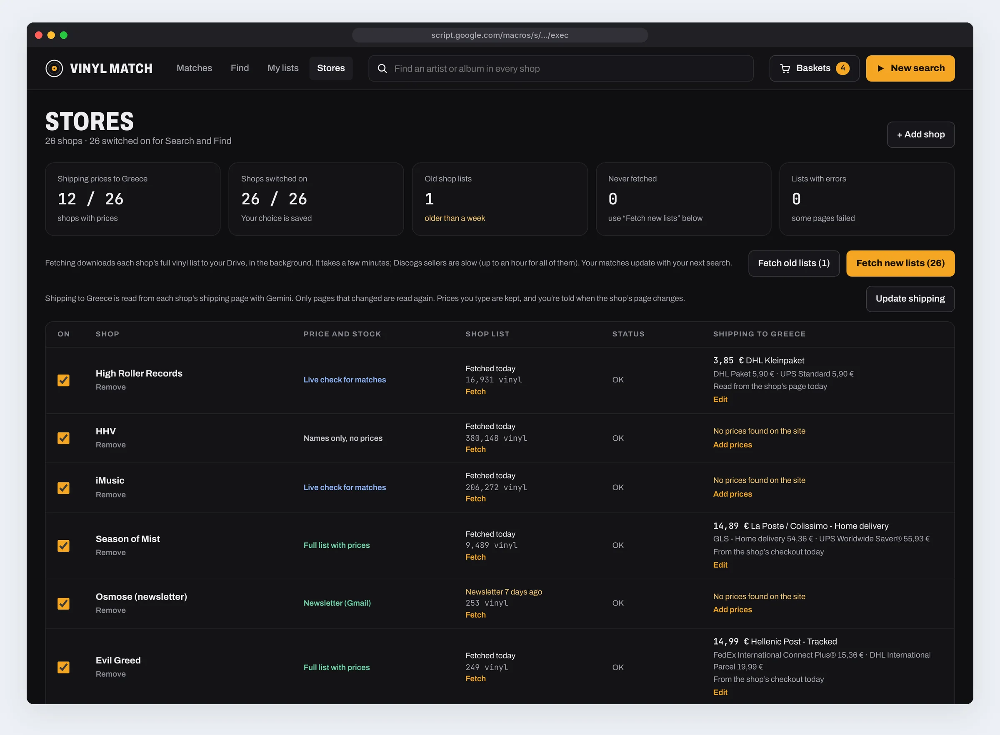
- I asked for a “Fetch new lists” button here, so updating the shop lists is separate from searching them.
- I also asked to add and remove shops without touching code. Paste a shop’s address or a Discogs seller’s name, and the app checks what kind of shop it is and how much vinyl it found before adding it. Kinds it cannot read get a clear “not supported yet”, not a broken shop.
- Removing one of the original shops only hides it, with a Restore button, so nothing that works can be lost by accident.
Shipping to Greece, the hardest number
No shop puts shipping in its product list. It lives on a policy page, in a table by weight or by zone, or only in the checkout. My first request was a shipping row on every shop’s sheet; when I pointed out that every shop has a shipping page, the plan became to read those pages.
First try
The AI read each shop’s shipping page for prices to Greece.
My report
“It found very few.” Prices for 5 of 16 shops, and two of them wrong.
Diagnosis
7 pages not found, 4 pages without prices; German home prices and kilos read as records.
Second try
Ask the shop itself: a test cart with an Athens address. 12 of 16 shops have prices.
For Shopify and WooCommerce shops, the app now puts one, then two, then three records in a test cart with an address in Athens and reads the shipping options exactly as the checkout shows them, tax included. Nothing is ordered and no account is made; the cart simply expires. From the three prices it works out the price per extra record. The other shops are still read from their shipping page, now told to skip home-country prices and to turn kilos into records.
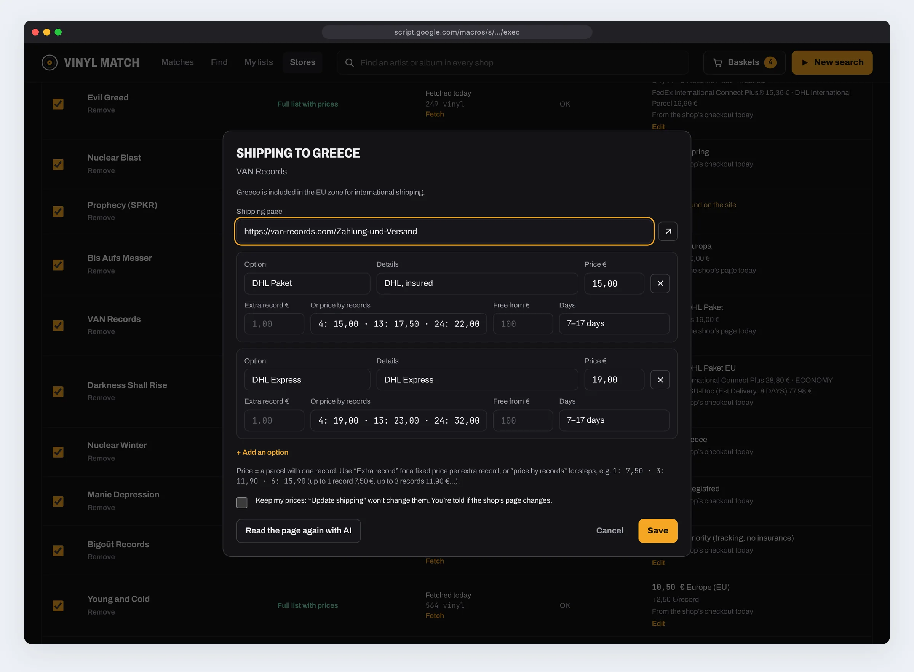
Says where it came from
Every price is labelled “From the shop’s checkout”, “Read from the shop’s page” or “Typed by you”, with the date.
Mine stays mine
Prices I type are locked: “Update shipping” will not overwrite them. If the shop’s page changes, I am told and I choose.
Discogs is different
Discogs works out shipping per order, so for its sellers the app asks me to type it, and says why.
AI only where it can see
Using AI for the hard “possible” matches was my idea. The design question was where to stop it.
Similar titles are the real grey zone: “Live in Leipzig” and “Live in Leipzig (Reissue 2023)”, “s/t” and the band’s name, “Vol. 1” and “Volume One”. A language model can judge those from the two titles. It cannot judge whether an HHV product is a CD, because it cannot see the page, so it would only guess. That case is never sent to it.
- Same album: moves to the shop’s results, tagged “AI match”.
- Different album: removed, but written to the log with the reason, so a mistake can be found.
- Not sure: stays in Possible, with the AI’s reason in the “why it’s here” note.
In my last search it confirmed 671 similar titles, rejected 135 and was unsure about 4. It runs on the Gemini API with a free key I created; the key is stored in the script’s private settings, never in the sheet, and only artist names and titles are sent.
Colours, type and two themes
Every colour is a design token. That made the light theme I asked for a set of new values rather than a second design.
Dark theme, the default
Light theme
Type
- Archivo for everything, with its condensed width for page titles and shop names in capitals, like the type on a record sleeve.
- JetBrains Mono for prices, counts, catalogue numbers and barcodes, so figures line up in columns.
- Availability is never colour alone: each state has a dot and a word, and “Out of stock” is also struck through.
- Every control has a visible label or an accessible name, including the “+” buttons: “Add to Season of Mist basket”.
| Colour pair | Contrast | Used for |
|---|---|---|
| Text #EDEDEF on cards #131316 | 15.9 : 1 | Album names, prices |
| Secondary #A3A3AD on cards | 7.4 : 1 | Artists, notes, hints |
| Amber #F5A623 on cards | 9.1 : 1 | Selected tab, links, “lowest new” |
| Dark text #1A1204 on amber | 9.2 : 1 | Main buttons, in both themes |
| Amber #F5A623 on white | 2.0 : 1 (fails) | Not used for text. The light theme uses #9C5C00 instead, 5.3 : 1 |
F Light, dark or the same as the device
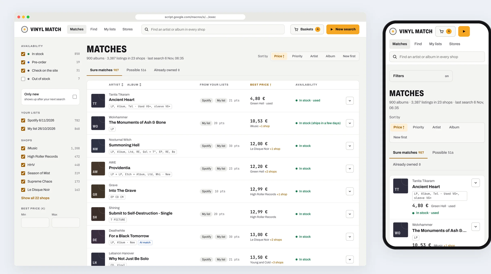
The theme is a setting with three choices: Dark, Light and Same as device. It is saved on each device, so the laptop can be light while the phone stays dark, and it is applied before the page draws, so it never flashes the wrong colours.
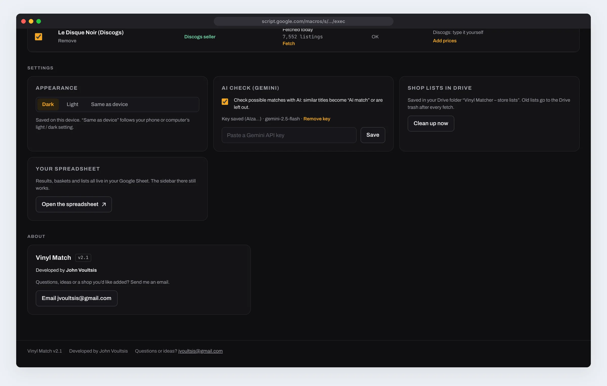
On the phone
Sheet sidebars do not appear in the Google Sheets phone app at all. The web app runs at the same address on the phone, with a layout of its own.
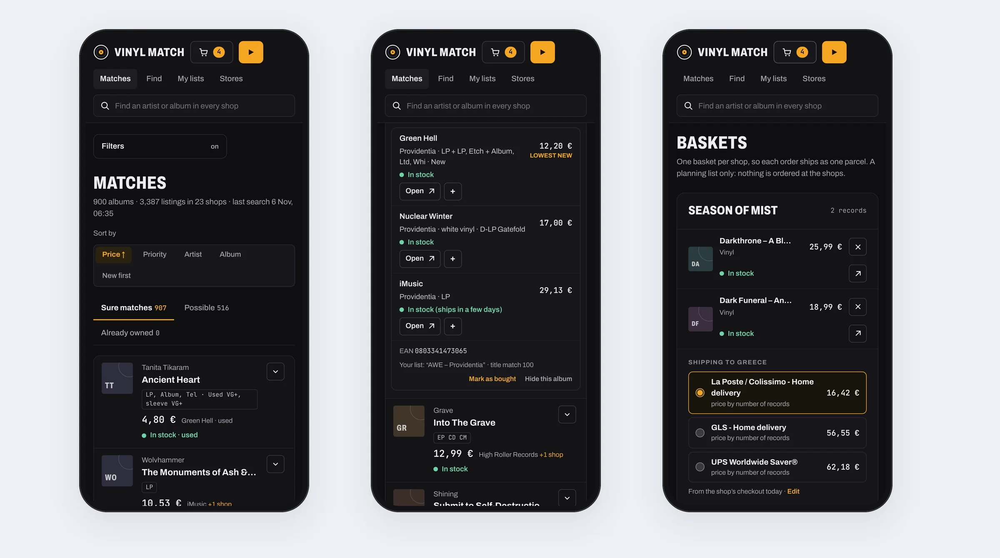
- Filters fold into one “Filters” button; the table becomes cards, and each shop’s offer stacks with its buttons underneath.
- The page numbers shrink to “‹ Previous 2 / 12 Next ›”.
- Buttons stay at least 32 pixels, with room around them, and the main ones are 40 pixels or more.
Design principles
The album is the unit
Organise around the question I ask, not around where the data came from.
Honest unknowns
“Price and stock on the site” is better than a guess. Pink only when out of stock is certain.
Show your source
Every price says where it came from and when: checkout, page, AI or me.
The total is the price
Records plus shipping, per shop, with the cheapest way to split an order.
Nothing irreversible
The basket orders nothing; removed shops can be restored; old files go to the Drive bin, not into the void.
Respect the shops
One catalogue download instead of thousands of searches; no bot protection or captcha bypassed.
Designed edge cases
Same album, different spelling
“Other World” and “Otherworld”, umlauts, “The”, “(2)” after a Discogs name, “Remastered” and “Deluxe” in titles: all cleaned before comparing.
A self-titled album
“s/t” and an album named after the band count as the same title.
A messy Spotify export
151 playlists became 1,708 albums: four or more tracks from one album count as the album, edition tags are removed, podcasts are skipped.
Prices in the wrong currency
iMusic moved to its euro store, with Greek VAT added so prices match the checkout. A shop that only shows dollars is reported, not converted silently.
A Discogs listing that sold
Listings are checked again on a fresh fetch: sold ones turn out of stock, removed ones disappear.
A search left running
It continues in the background in 4.5-minute runs, within Google’s six-minute limit, and the app picks it up again when reopened.
What I would change next
Check the AI’s shipping. Even after the fix, the price read for High Roller Records is a German domestic parcel. The lock and the source labels exist for exactly this, but the app could flag shipping prices that look too low for an international parcel.
The last four shops. HHV, iMusic and Osmose still have no shipping price, and Prophecy shows dollars. For now they are typed by hand.
Very high scores. “A Blaze in the Northern Sky Live” scores 91 against the studio album, so it counts as sure and never reaches the AI check. Sending 90 to 99 to the AI as well would catch it.
Sharing. The app runs as “only myself”. A friend would need a copy of their own; making that a one-click setup would be the next step if anyone else wants it.
What I learned
Structure follows the question. The data arrived by shop, so the first design was by shop. Turning it around to the album changed everything that came after it, including the baskets.
Use is the real test. Over 160 automated scenarios passed, and the tool was still slow, still showed CDs and still made me hunt through tabs. A log and a week of real searches showed what to fix.
Honesty is a feature. A blocked shop, an unreadable price or an AI guess could all have been hidden. Saying so, and saying where every number came from, is what makes the rest trustworthy.
See the options before choosing. Asking for one or two screens per route made the decision obvious in a way a list of pros and cons did not.
How this was made: the idea, the design and every decision are mine: the approach of downloading once, the shops and sources, the result format, the baskets, the shipping, the review of every version on my own sheet and the bug reports from my own use. The shops started from my own research. The code, the concept screens and the clickable prototype were made with Claude from my specifications and requests.
Sources and credits